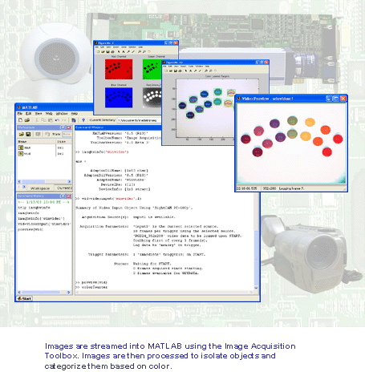

| Image Acquisition Toolbox Demos |
The Image Acquisition Toolbox extends the MATLAB technical computing environment to include
functions for acquiring video and images from PC-compatible frame-grabber cards and video devices.
The toolbox allows you to configure your hardware, preview your video, and stream images directly
into MATLAB for analysis and visualization.
The following tutorials describe some of the features available in the Image Acquisition Toolbox:
